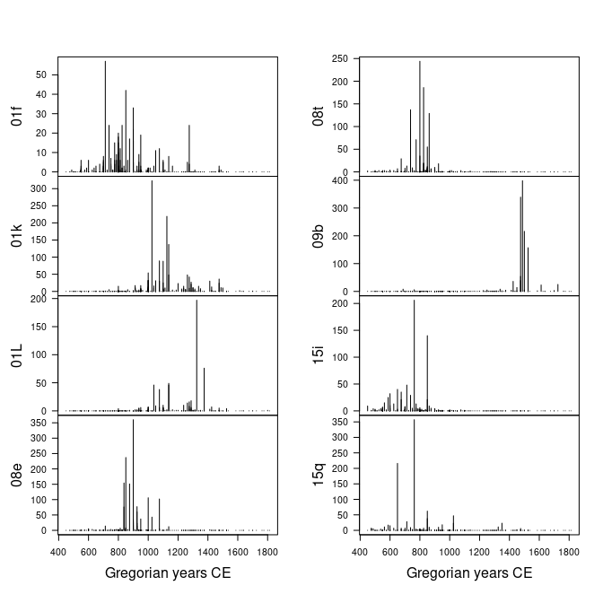

Overview
Base R ships with a lot of functionality useful for time series, in particular in the stats package. However, these features are not adapted to most archaeological time series. These are indeed defined for a given calendar era, they can involve dates very far in the past and the sampling of the observation time is (in most cases) not constant.
aion provides a system of classes and methods to represent and work with such time-series. Dates are represented as rata die (Reingold and Dershowitz 2018), i.e. the number of days since 01-01-01 (Gregorian), with negative values for earlier dates. This allows to represent dates independently of any calendar: it makes calculations and comparisons easier.
Once a time series is created with aion, any calendar can be used for printing or plotting data (defaults to Gregorian Common Era; see vignette("aion")).
aion does not provide tools for temporal modeling. Instead, it offers a simple API that can be used by other specialized packages.
To cite aion in publications use:
Frerebeau N (2024). “aion: An R Package to Represent Archaeological Time Series.” Journal of Open Source Software, 9(96). doi:10.21105/joss.06210 https://doi.org/10.21105/joss.06210.
Frerebeau N, Roe J (2024). aion: Archaeological Time Series. Université Bordeaux Montaigne, Pessac, France. doi:10.5281/zenodo.8032278 https://doi.org/10.5281/zenodo.8032278, R package version 1.0.3, https://packages.tesselle.org/aion/.
This package is a part of the tesselle project https://www.tesselle.org.
Installation
You can install the released version of aion from CRAN with:
install.packages("aion")And the development version from GitHub with:
# install.packages("remotes")
remotes::install_github("tesselle/aion")Usage
Time-series of ceramic counts:
## Get ceramic counts (data from Husi 2022)
data("loire", package = "folio")
## Keep only variables whose total is at least 600
keep <- c("01f", "01k", "01L", "08e", "08t", "09b", "15i", "15q")
## Get time midpoints
mid <- rowMeans(loire[, c("lower", "upper")])
## Create time-series
X <- series(
object = loire[, keep],
time = mid,
calendar = calendar("AD")
)
## Plot (default calendar)
plot(
x = X,
type = "h" # histogram like vertical lines
)
Related Works
- era: provides a consistent representation of year-based time scales as a numeric vector with an associated era.
Contributing
Please note that the aion project is released with a Contributor Code of Conduct. By contributing to this project, you agree to abide by its terms.